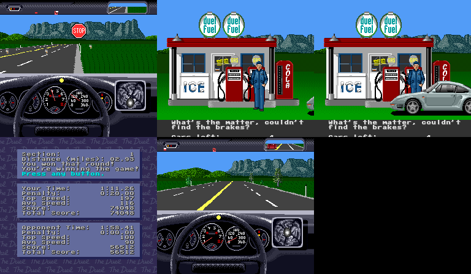
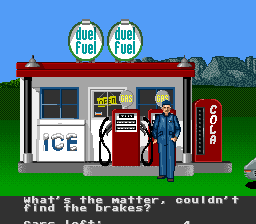
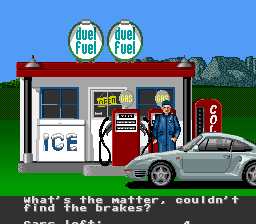
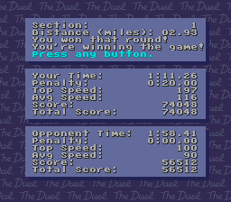
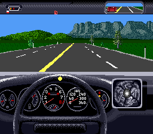

tools/out/lane3_service_status_phase_pack/anchor_sheet.pngCopied original artifact.
tools/out/lane3_service_status_phase_pack/02_gas_station_exterior_anchor.pngCopied original artifact.
tools/out/lane3_service_status_phase_pack/03_attendant_dialog_anchor.pngCopied original artifact.
tools/out/lane3_service_status_phase_pack/04_partial_results_anchor.pngCopied original artifact.
tools/out/lane3_service_status_phase_pack/05_next_checkpoint_restart_anchor.pngCopied original artifact.Track 1 Live-Race Service / Partial-Results Screens
- Intake date:
2026-03-28 - Source video:
manual_artifacts/lane3/lane3_live_race_video.avi- Builder:
tools/build_video_phase_pack.py- Spec:
tools/gameplay_video_phase_packs.json- Promoted phase pack:
tools/out/lane3_service_status_phase_pack/
Key Artifacts
tools/out/lane3_service_status_phase_pack/anchor_sheet.pngtools/out/lane3_service_status_phase_pack/02_gas_station_exterior_anchor.pngtools/out/lane3_service_status_phase_pack/03_attendant_dialog_anchor.pngtools/out/lane3_service_status_phase_pack/04_partial_results_anchor.pngtools/out/lane3_service_status_phase_pack/05_next_checkpoint_restart_anchor.pngtools/out/lane3_service_status_phase_pack/manifest.json
What Was Run
python3 -m py_compile tools/build_video_phase_pack.pypython3 tools/build_video_phase_pack.py --spec tools/gameplay_video_phase_packs.json
Closed Read
- the previously unseen checkpoint/post corridor from the preserved local
live_race_mid continuity clip is now promoted as stable named stills - the live gameplay-to-service boundary is no longer only implied by the older
STOP sign still: 24.960s: checkpoint STOP sign31.500s: gas-station exterior without the car fully in frame31.750s: attendant/dialog still with the car and station worker in view34.000s: player's partial-results screen41.000s: next checkpoint restart back in cockpit driving- the local AVI keeps the service/post corridor compact:
- the station exterior and the attendant/dialog still are only a short fraction of a second apart
- the results screen then persists much longer than either service still
- practical reading:
- lane 3 now has preserved visual anchors for the user's human note about frentista dialog plus parciais
- these are human-facing phase anchors, not replacements for the trusted
BG1/BG2/BG3/OBJ gameplay surfaces
Why This Matters
- later gameplay capture can now target the service/post corridor by name instead of searching the manual clip again
- the next agent can aim emulator-side
BG/OBJ extraction at these same named moments rather than treating the checkpoint sequence as one vague block
Next Best Step
- treat this pack as the visual boundary for the service/post sequence
- when a reproducible live capture reaches this corridor, bind:
- service/post presentation to the trusted
BG surfaces - any dynamic actor or message-strip changes to
OBJ and the existing gameplay-side watchlist
{kind=link}
{kind=link}
{kind=link}
{kind=link}
{kind=link}